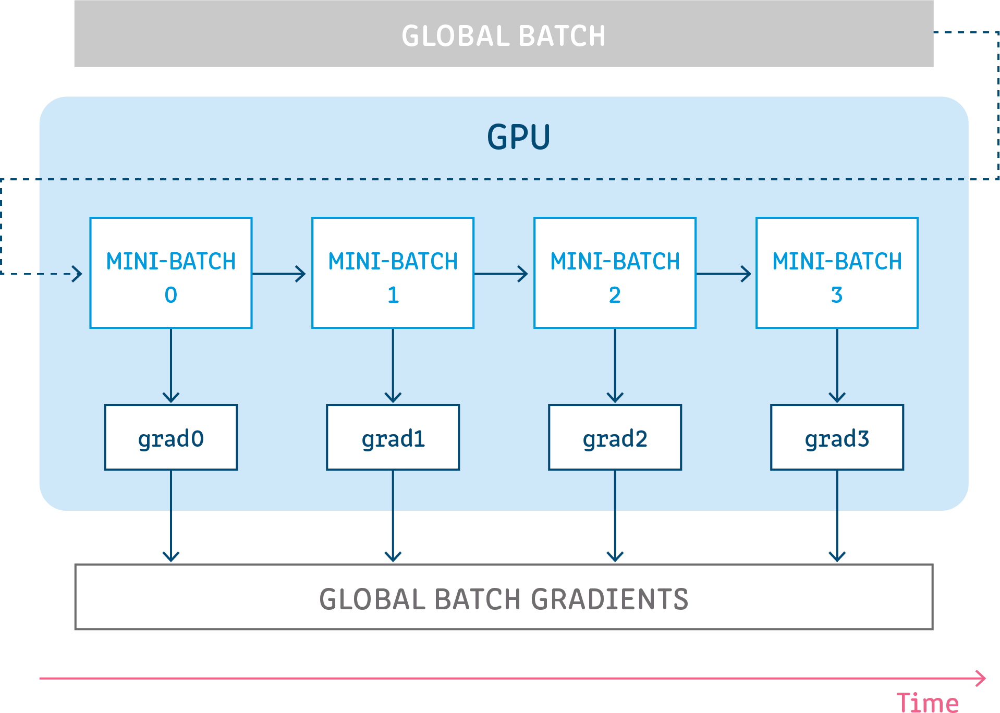

Concepts
Contents
Concepts#
Neural Network#
Neural networks are a class of machine learning algorithms used to model complex patterns in datasets using multiple hidden layers and non-linear activation functions. A neural network takes an input, passes it through multiple layers of hidden neurons (mini-functions with unique coefficients that must be learned), and outputs a prediction representing the combined input of all the neurons.

Neural networks are trained iteratively using optimization techniques like gradient descent. After each cycle of training, an error metric is calculated based on the difference between prediction and target. The derivatives of this error metric are calculated and propagated back through the network using a technique called backpropagation. Each neuron’s coefficients (weights) are then adjusted relative to how much they contributed to the total error. This process is repeated iteratively until the network error drops below an acceptable threshold.
Neuron#
A neuron takes a group of weighted inputs, applies an activation function, and returns an output.

Inputs to a neuron can either be features from a training set or outputs from a previous layer’s neurons. Weights are applied to the inputs as they travel along synapses to reach the neuron. The neuron then applies an activation function to the “sum of weighted inputs” from each incoming synapse and passes the result on to all the neurons in the next layer.
Synapse#
Synapses are like roads in a neural network. They connect inputs to neurons, neurons to neurons, and neurons to outputs. In order to get from one neuron to another, you have to travel along the synapse paying the “toll” (weight) along the way. Each connection between two neurons has a unique synapse with a unique weight attached to it. When we talk about updating weights in a network, we’re really talking about adjusting the weights on these synapses.
Weights#
Weights are values that control the strength of the connection between two neurons. That is, inputs are typically multiplied by weights, and that defines how much influence the input will have on the output. In other words: when the inputs are transmitted between neurons, the weights are applied to the inputs along with an additional value (the bias)
Bias#
Bias terms are additional constants attached to neurons and added to the weighted input before the activation function is applied. Bias terms help models represent patterns that do not necessarily pass through the origin. For example, if all your features were 0, would your output also be zero? Is it possible there is some base value upon which your features have an effect? Bias terms typically accompany weights and must also be learned by your model.
Layers#

Input Layer
Holds the data your model will train on. Each neuron in the input layer represents a unique attribute in your dataset (e.g. height, hair color, etc.).
Hidden Layer
Sits between the input and output layers and applies an activation function before passing on the results. There are often multiple hidden layers in a network. In traditional networks, hidden layers are typically fully-connected layers — each neuron receives input from all the previous layer’s neurons and sends its output to every neuron in the next layer. This contrasts with how convolutional layers work where the neurons send their output to only some of the neurons in the next layer.
Output Layer
The final layer in a network. It receives input from the previous hidden layer, optionally applies an activation function, and returns an output representing your model’s prediction.
Weighted Input#
A neuron’s input equals the sum of weighted outputs from all neurons in the previous layer. Each input is multiplied by the weight associated with the synapse connecting the input to the current neuron. If there are 3 inputs or neurons in the previous layer, each neuron in the current layer will have 3 distinct weights — one for each each synapse.
Single Input
Multiple Inputs
Notice, it’s exactly the same equation we use with linear regression! In fact, a neural network with a single neuron is the same as linear regression! The only difference is the neural network post-processes the weighted input with an activation function.
Activation Functions#
Activation functions live inside neural network layers and modify the data they receive before passing it to the next layer. Activation functions give neural networks their power — allowing them to model complex non-linear relationships. By modifying inputs with non-linear functions neural networks can model highly complex relationships between features. Popular activation functions include relu and sigmoid.
Activation functions typically have the following properties:
Non-linear - In linear regression we’re limited to a prediction equation that looks like a straight line. This is nice for simple datasets with a one-to-one relationship between inputs and outputs, but what if the patterns in our dataset were non-linear? (e.g. \(x^2\), sin, log). To model these relationships we need a non-linear prediction equation.¹ Activation functions provide this non-linearity.
Continuously differentiable — To improve our model with gradient descent, we need our output to have a nice slope so we can compute error derivatives with respect to weights. If our neuron instead outputted 0 or 1 (perceptron), we wouldn’t know in which direction to update our weights to reduce our error.
Fixed Range — Activation functions typically squash the input data into a narrow range that makes training the model more stable and efficient.
Loss Functions#
A loss function, or cost function, is a wrapper around our model’s predict function that tells us “how good” the model is at making predictions for a given set of parameters. The loss function has its own curve and its own derivatives. The slope of this curve tells us how to change our parameters to make the model more accurate! We use the model to make predictions. We use the cost function to update our parameters. Our cost function can take a variety of forms as there are many different cost functions available. Popular loss functions include: MSE (L2) and Cross-entropy Loss.
Optimization Algorithms#
Be the first to contribute!
Gradient Accumulation#
Gradient accumulation is a mechanism to split the batch of samples—used for training a neural network—into several mini-batches of samples that will be run sequentially.
This is used to enable using large batch sizes that require more GPU memory than available. Gradient accumulation helps in doing so by using mini-batches that require an amount of GPU memory that can be satisfied.
Gradient accumulation means running all mini-batches sequentially (generally on the same GPU) while accumulating their calculated gradients and not updating the model variables - the weights and biases of the model. The model variables must not be updated during the accumulation in order to ensure all mini-batches use the same model variable values to calculate their gradients. Only after accumulating the gradients of all those mini-batches will we generate and apply the updates for the model variables.
This results in the same updates for the model parameters as if we were to use the global batch.
More details, a technical and algorithmical deep-dive, how-to tutorials, and examples can be found at [2].
References